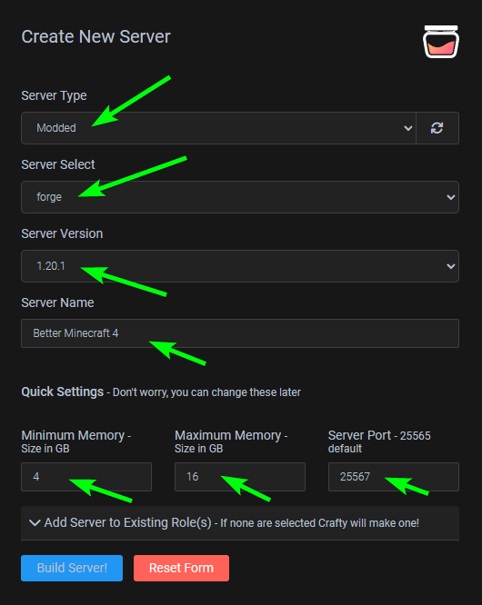
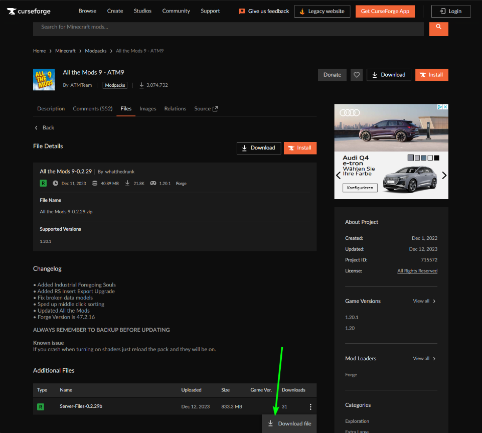
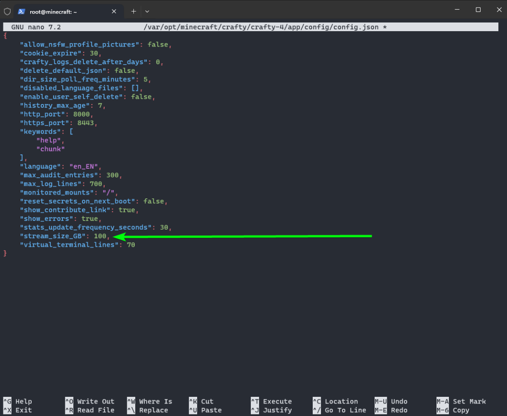
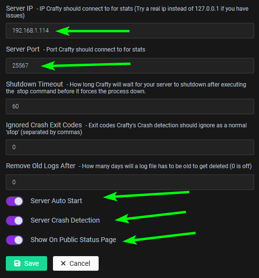
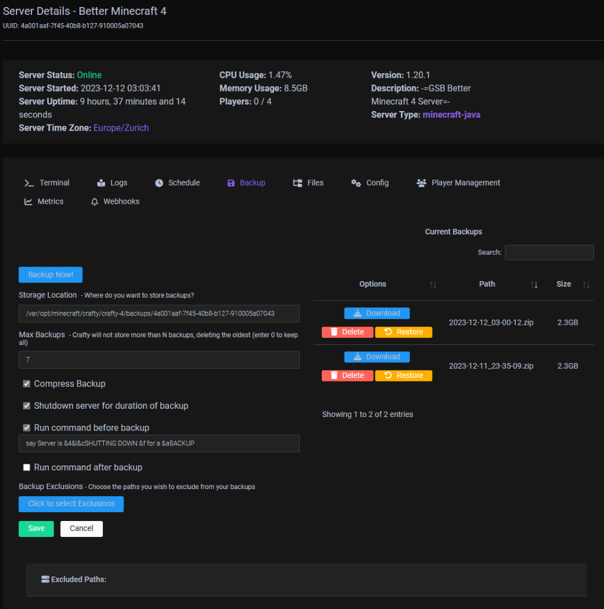
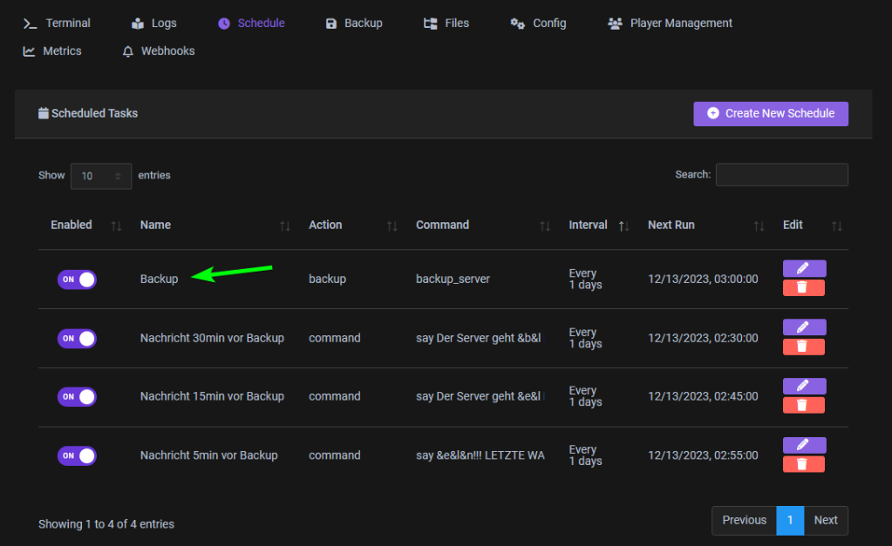
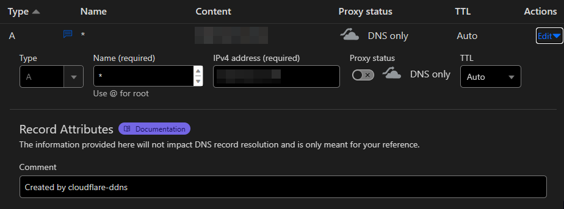
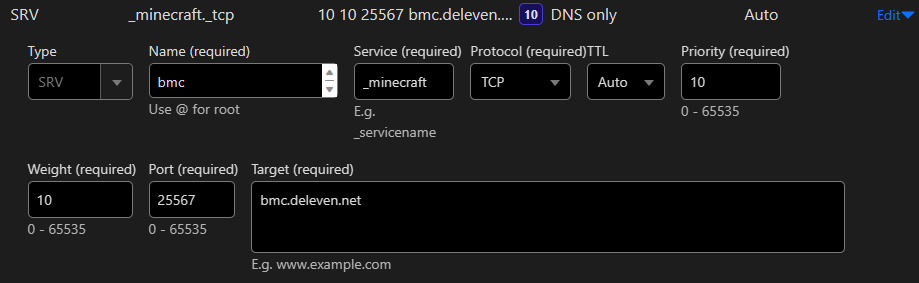

Server Setup¶
Install and Setup Proxmox LXC and Crafty Controller 4¶
-
My Server runs on a Proxmox Ubuntu LXC Container
-
Install Crafty Controller 4 According to the official Guide
Here is the TLDR Version of this Guide¶
-
Automated Install Script (Quick)¶
Please ensure your distro's packages are up-to-date and Git is present before installing Crafty:
One line installer
git clone https://gitlab.com/crafty-controller/crafty-installer-4.0.git && \ cd crafty-installer-4.0 && \ sudo ./install_crafty.shOnce installation is complete to run Crafty manually run the following. Note that if you used a directory other then the default to install Crafty you will need to cd into that directory.
-
now you should be able to access the Crafty Controller via
https://YOUR_SERVER_IP:8443Default Login
Username:
admin
Password:crafty
Create your Servers in Crafty Controller 4¶
-
I used this Guide to create my Better MineCraft 4 Server
- Basically it is this
- Create a Forge Server
- Fill out all the necessary details
- 
- Modded
- forge
- Server Version (Check the one needed from you Modpack)
- Set the Memory (4/16 seems to work just fine)
- Set the Server Port
- Build Server!
- Download the Modpack you want from Curse-Forge make sure download the
Server Pack, not the regular one  -
Upload the ZIP File *

Tip
you might run in to the issue that it isnt uploading, that means you need to adjust the streamsize in here to 10GB or 100GB (if it is bigger the 1GB):

-
when it autorefreshed and for that matter uploaded, Rightclick to extract
- Adjust the
server.properties,whitelist.jsonandops.json(or do it ingame afterwords)- my default server.properties ( Link) are
- Adjust the
configswith the right IPPortAutostartCrash Detectionand-
Show on Public Status Pagetoggle  -
Go to Backups and set, how the Server gets backed up and how many Backups it keeps

-
and then Sheduale a Backup (i also added some Warning Messages before)

-
Now go to the Terminal in Crafty Control and Start the Server
- Basically it is this
Make Server Accessible from outside¶
-
Cloudflare DDNS Updater (Docker)
My current docker-compose.yamlversion: "3" services: cloudflare-ddns-updater: image: favonia/cloudflare-ddns:latest network_mode: host cap_add: - SETUID # Leave this alone, as is - SETGID # Leave this alone, as is cap_drop: - all read_only: true security_opt: - no-new-privileges:true environment: - PUID=1000 - PGID=1000 - CF_API_TOKEN=${CF_API_TOKEN} # (1)! - DOMAINS=${DOMAINS} # (2)! - PROXIED=true - IP6_PROVIDER=none restart: unless-stopped- The value of
CF_API_TOKENshould be an API token (not an API key), which can be obtained from the API Tokens page.
Use theEdit zone DNStemplate to create and copy a token into the environment file.
(The less secure API key authentication is deliberately not supported.) - Example:
or in the .env file
- The value of
-
This will then create the
A-Recordfor you and keeps it up to date  -
CNAMEbmc (Proxied)
SRV